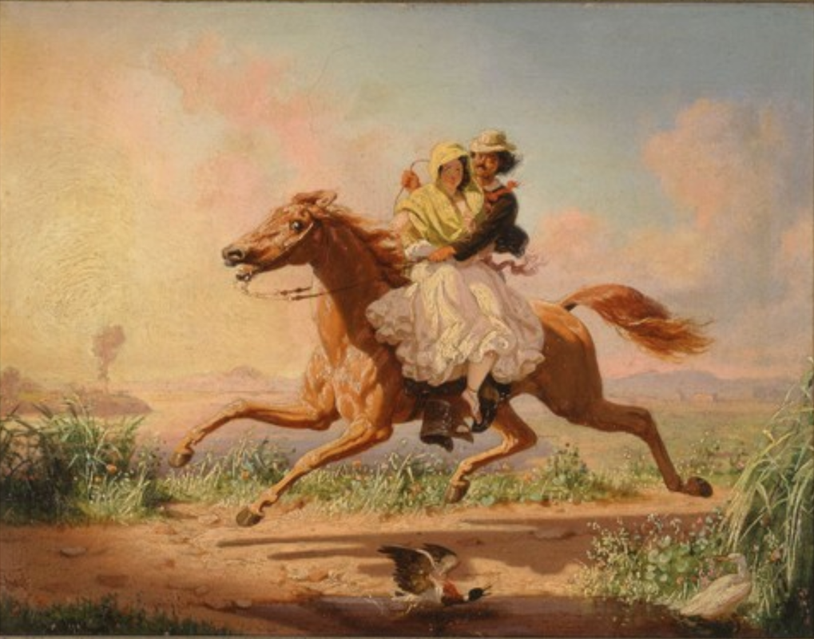
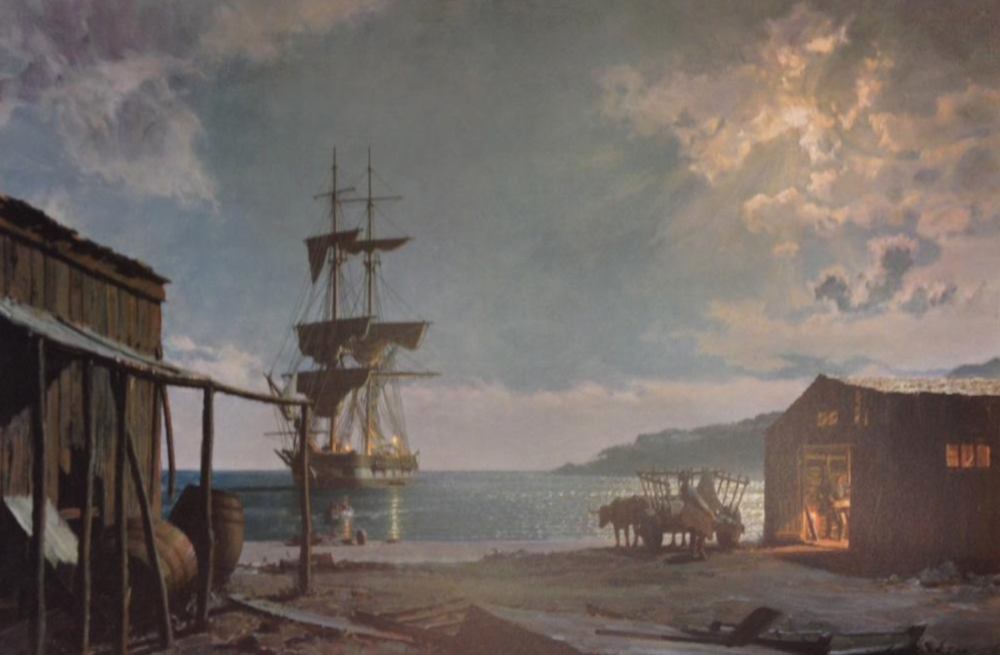
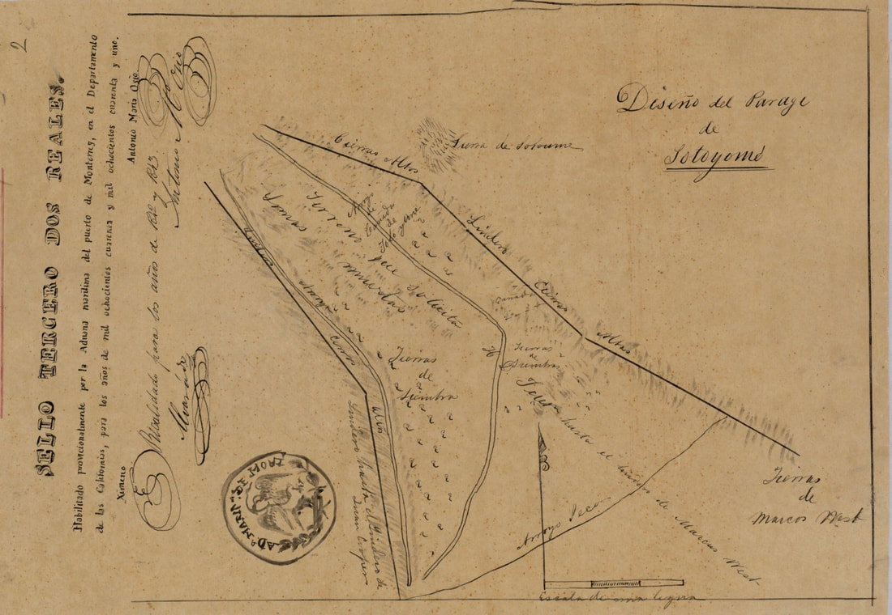

Above: The brig, Pilgrim leaves Santa Barbara for Monterey in Mexican California in 1835, John Stobart
A San Diego Landlord
Captain Henry Delano Fitch
© 2020 Hannah Clayborn All Rights Reserved
 Henry Fitch carried a portrait of his father Beriah on board ship with him, even on the Maria Ester, where he met Josefa Carrillo in 1826. (San Diego Historical Society) Henry Fitch carried a portrait of his father Beriah on board ship with him, even on the Maria Ester, where he met Josefa Carrillo in 1826. (San Diego Historical Society)
Henry Delano Fitch, the first white man to lay claim to the land we call Healdsburg, first arrived in lower California on the Mexican trading brig, Maria Ester, in 1825. He would soon become the first permanent American settler in San Diego
Captain Fitch played an important role in early California commerce because of his constant trading activities along the western coast of the Americas from the 1820s to the late 1840s. He, along with his contemporaries, Juan Bautista Rogers Cooper of Monterey and Cooper’s half-brother, Thomas O. Larkin; William G. Dana of Santa Barbara, and Abel Stearns of Los Angeles, were the forerunners of an irrepressibly capitalist Yankee culture whose influence would soon flood California. His importance to Healdsburg derives from his development and financing of the 48,800 acre land grant, the Rancho Sotoyome (or Satoyomi), and his family connections on what was once the Alta (northern) California frontier. His life also illuminates the early mechanisms of wealth and power in Mexican California. Born in Nantucket, Massachusetts on May 7, 1798, Henry Delano Fitch moved with his family to New Bedford as an infant. His father, Beriah, a sailing Master, and his mother, Sarah Delano, both had ancestors that came to America in the 1600's. Sometime after 1810, Beriah Fitch gave up his career as master of whaling ships to bring his wife, two sons, and two daughters to a farm in Charlestown, New Hampshire. It is likely that the Embargo of 1807 and the later blockade of New England ports by the British fleet during the War of 1812 severely curtailed shipping, but Beriah did not return to his career at sea.after peace was restored.(1) Family sources claim that Henry attended Harvard, but if he did, he did not graduate from that Cambridge Institution.(2) He shipped out to sea in 1815, and his early voyages as master included exotic ports on the South American coast including Callao, Peru, and Valparaiso, Chile, to buy and sell cargoes for Henry Virmond, a wealthy Danish merchant living in Acapulco.(3)  In her younger days Josefa Carrillo was said by family members to have resembled her daughter, Anita Fitch Grant (1848 -1933). (Sonoma County Library) In her younger days Josefa Carrillo was said by family members to have resembled her daughter, Anita Fitch Grant (1848 -1933). (Sonoma County Library)
Fitch Falls for an Hija del Pais
During an 1826 voyage to the California coast aboard the Maria Ester Fitch met sixteen year-old Josefa Carrillo in the port of San Diego. She, like so many other Californios of her era, might have come aboard the vessel to inspect the luxuries and household goods available for trade in exchange for the main export and currency of Mexican California, cattle hides and tallow. On board the Maria Ester, Josefa might have seen trade goods as diverse as Chinese and European cloth, handkerchiefs, cognac, gin, wine, glass vases, painted crockery, iron bars, gunpowder, fiddles, locks, buttons, cologne, cooking tools, or cigars. Captain Fitch was smitten by the young girl, who was described as a great beauty with shiny black hair and hazel eyes. He initiated a courtship that was complicated by his many absences while trading goods up and down the California coast For her part, Josefa, … being pleased with the good manners and handsome presence of the young Massachusetts gentleman she accepted when he proposed to lead her to the altar.(4) Both Josefa and Henry were noted for their height in memoirs, with Captain Fitch described as six foot four inches tall.(5) In 1827 Captain Fitch declared his honorable matrimonial intentions in writing to Josefa's parents, Joaquin Carrillo and Maria Ygnacia López.(6) Fitch also began preparations to become a Mexican citizen and convert from his Congregationalist faith to Roman Catholicism. He would also soon trade his Yankee name for the more politically acceptable, Enrique Domingo Fitch. Mexican citizenship and marriage ties to important landowning California families helped open the portals of wealth and influence to most of the prominent Americans who settled in Mexican California. Of the earliest foreigners to settle or claim land in what we now call Sonoma County, George Yount, H.D. Fitch, Jacob Leese, Victor Prudon, John Wilson, James Scott, Mark West, John B.R. Cooper, James Black, James Dawson, Edward Bale, Edward Manuel McIntosh, and Timothy Murphy, all but one married hijas del pais (daughters of the land). Three of them, Fitch, Cooper, and Leese, married daughters of the Joaquin Carrillo family of San Diego.(7) 
Captain Henry Delano Fitch (1799 - 1849) Portrait (San Diego Historical Society)
Historical Soap Opera
This was a happy conjunction of true love and heightened business prospects for Fitch. But, love or ambition notwithstanding, the Fitch-Carrillo marriage proved to be a difficult union to make. Its dramatic obstacles have provided soap opera scripting for generations of romantic California historians. Josefa Carrillo, who would later spend the majority of her life near Healdsburg, was formally named Maria Antonio Natalia Elijia Carrillo by her parents. Three days after her birth in San Diego on December 29, 1810, her godmother, Josefa Sal de Mercado, took her to be baptized and later claimed to have forgotten the lengthy official designation. The godmother simply had her godchild baptized with her own name, Josefa. Little Josefa was the firstborn of a well-connected soldier, Joaquin Victor Carrillo, a native of Baja, and his wife, Maria Ygnacia de la Candelaria Lopez. Carrillo, had arrived at the San Diego presidio in 1800, and had a fast-growing family by 1820, when they took up residence in the adobe house built by Comandante Francisco Ruiz. This was the first house built on the flat land between the presidio and San Diego Bay and was noted for its orchard.(8) In 1829, two years after Josefa and Captain Fitch met, it seemed that all of the preparations for the marriage were complete. Fitch had been baptized a Catholic on April 14, 1829, and all were gathered for the wedding the next evening. Suddenly Domingo Carrillo, adjutant to Governor Jose Maria Echeandia, appeared and ordered a halt to the ceremony by order of the Governor. This shocking situation was further complicated by the fact that Domingo Carrillo was also Josefa's uncle, and had recently acted as godfather to Captain Fitch at his Catholic baptism. Many years later Josefa told historians that the Mexican Governor's love for her drove him to thwart the marriage. Other historians cite Echeandia's hatred of Fitch specifically, and his hostility towards all foreigners in general.(9) Although there is evidence that Governor Echeandia was already married, that might not have precluded his amorous intentions toward Josefa.(10) The Governor's order prompted the disappointed Josefa to exclaim, Why don't you carry me off, Don Enrique? Which is exactly what Fitch did, although his bride needed little, if any, carrying. That same evening Josefa’s cousin, Pio Pico (who would later become Governor of California) delivered her to the waiting brig Vulture. With Fitch as her master, the ship, loaded with hides and the unmarried couple, set sail for Valparaiso, Chile. In that city, three months later, Josefa and Captain Fitch were finally wed, on July 3, 1829. By the time the couple returned to San Diego on July 21, 1830, Josefa carried a one month-old infant son, Enrique Eduardo. Josefa's female relatives met her joyously on the dock, but her enraged father remained at home. According to Josefa's own account, her father would not speak to her when she first found him at the family adobe. After she fell to her knees, however, Don Joaquin Carrillo was placated, forgave her for the scandal, and embraced his daughter. The Carrillo family finally held the grand ball and "illumination" in honor of the couple that had been missed the year before.(11) 
San Diegans of the 1830s would have dressed like the "Poblanas" drawn by Carl Nebel in 1836. From: Picturesque and Archeological Voyage in the Most Interesting Parts of Mexico.
Unfortunately that was not the end of the couple's marital problems. After the reconciliation with her family, Josefa and her son sailed up the coast with Fitch as he traded his goods. On this trip Fitch carried copper kettles for the missions, tin bars, sulfur, cordage, wine, handkerchiefs, blue print cloth, almonds, sugar, and a recast bell for Santa Cruz.
When he reached San Pedro, Captain Fitch received a summons from Padre Jose Sanchez, Ecclesiastical Judge of the Missions. The summons stated that the marriage certificate from Valpairaiso had irregularities, including being torn and blotted with ink. Fitch, intent on his business as always, ignored the Padre's order. When he docked in Monterey on August 29, 1830, he was arrested by order of Governor Echeandia. The ranking officer, General Mariano G. Vallejo, held Captain Fitch in that city. Vallejo would later become Fitch's brother-in-law by marrying Josefa's younger sister, Benicia, two years later, and would become instrumental in Fitch's acquisition of the Rancho Sotoyome grant near Healdsburg in 1841. Josefa and her infant son, meanwhile, were detained under comfortable house arrest at the home of John B.R. Cooper. Later she was given permission to travel, without her husband, to Mission San Gabriel, where their case would be heard. Captain Fitch, bitter over the damage this arrest caused his business, got permission to go by sea instead of overland to the Mission by pleading an acute case of hemorrhoids. Fortunately, despite this malady, he managed to do a brisk business trading along the coastal ports during the southward voyage. Finally, on December 28, 1830, the ecclesiastical tribunal ruled that the Fitch/Carrillo union was "valid", although illegitimate, by virtue of certain technicalities. Padre Sanchez ordered a light sentence of prayer, a partial rosary, as penance for the couple. But to atone for his part in the scandal Captain Fitch was also ordered to give as a penance and reparation a bell of at least 50 pounds in weight for the church in Los Angeles which barely has a borrowed one.(12) Fitch remained bitter about the episode and most historians doubt that he ever came through with the bell for Los Angeles as ordered. He displayed his bad temper, as well as his salty sea captain's humor, when he wrote to Cooper: They thought at first of nulling my marriage, but after going through a long war of examinations of me and my wife they found that we were lawfully married and all the devils in Hell could not separate us. So all those busybodies who had had too much to say about my marriage being unlawful may go to Hell and f--k spiders and if you hear any of them speak any more about it please damn their eyes on my account.(13) Fitch was equally angry with his in laws, writing that he would not leave Josefa and Eduardo with the Carrillos when he next sailed for Mexico: My reason for not leaving her with her parents is that after she left Monterey her father abused her most shamefully frequently threatening to flog her and telling her I was a heretic and that she was living with me as a common prostitute and such like stuff. Fitch stated that he would not have his wife and child living in such a house. He hoped his father-in-law would go to Hell.(14) In spite of his adamant statement against residing in San Diego, Henry and Josefa settled there during their nearly twenty years of marriage. All of their children, except their first child, Enrique Eduardo, were born in the southernmost port of Alta California. Fitch rented rooms from a neighbor of the Carrillo's and opened a store there. Later they built a new home and store nearby. (see below). After Josefa's widowed mother moved to Rancho Cabeza de Santa Rosa in Sonoma County in 1837, Josefa's brother Ramon sold the Carrillo home and orchard to Lorenzo Soto in 1842. A portion of the Casa de Carrillo still stands in Old Town San Diego.  The Elopement by Charles Nahl, 1875 (Bancroft Library)
This painting is thought to depict the elopement of Josefa Carrillo and Henry Delano Fitch, when her cousin Pio Pico carried her on horseback to Fitch, waiting aboard the brig Vulture in 1829.
Reluctant Civil Servant
As the first permanent Yankee settler in Mexican San Diego, Captain Fitch made a smooth transition into San Diego society. Fitch continued his trading as master of the ship Leonor until he ended his relationship to the ship's owner, Virmond, in 1831 or 1834. (15) By 1833 he had also established an important general merchandise store in San Diego which became the headquarters of an extensive trading network with merchants and ranchers in lower California, Los Angeles, Santa Barbara, Monterey, and San Francisco. He also traded with ships from the United States, South America, Mexico, and the Hawaiian Islands. By all accounts the Captain would have been happy to be left alone to pursue his many profitable, but tangled, business dealings. He was increasingly called upon, however, to accept positions of civic authority. In 1835 Fitch served as the town attorney (sin dico procurador) of San Diego. He was responsible for collecting court fines, recording deeds, and acting as counsel to the mayor and councilmen. Since he was not fluent in Spanish, Fitch found his job difficult. He asked to be released in June of that same year. Just one year later he was persuaded to act as police commissioner (comisario de policia).(16) His business was again briefly interrupted when he was appointed justice of the peace (juez de paz) in January 1840. Such an office carried with it a wide array of judicial and legislative duties and Fitch once again pleaded that his lack of fluency in Spanish disqualified him for the position. In a letter to Abel Stearns he complained: ...all I can say is that I wish them all in hell that ever invented to propose such a thing as being a juez de paz...I'll be damned if I know any more of laws as juzgado business than a dog does of his father.(17) Fitch was relieved of his detested duties a few months later. Perhaps the most consequential duty Fitch had, both for himself and the future city of San Diego, was making the first survey map of the pueblo lands in 1845. According to Dr. Claire B. Dane, writing in the San Diego Historical Society Quarterly, (Spring 1991, Vol. 27. no. 2) . ..The Governor appointed Santiago Arguello to that position [sub-prefect] and Arguello ordered a survey of the pueblo lands. This turned out to be an event of enormous significance for San Diego. Arguello himself participated in making the survey, as did Jose Antonio Estudillo, Jose Matias Moreno (who later became secretary to Governor Pio Pico), Captain Henry Delano Fitch...and several others. The survey was made in August, 1845; boundaries were noted, landmarks were recorded, and a map was drawn up by Captain Fitch. The map was sent to the Governor’s office and signed by Pio Pico in May, 1846 Though not especially remarked at the time, the action of these men in making the survey ensured that San Diego would eventually receive title to about 48,000 acres of land–more land than any other city in California; and, probably, more land than any other city in the United States. Finally, Captain Fitch was called upon to serve as alcalde, or chief executive officer, of San Diego when the American forces took over in September 1846. Dr. John S. Griffin, an army surgeon commented at that time, We have an alcalde named Fitch, an old sea captain who knows as much about law as he does of religion. Once again Fitch was relieved of his duties at his own request in June 1847.(18) Oldest House in San Diego, Casa de Carrillo Narrow Escape
This was a time of repeated revolution and political turmoil in Mexican California and the government was in an almost constant state of agitation. After the missions were secularized, or disbanded, in the early 1830’s, many of the Indian neophytes had fled to the interior. The land that was to have been theirs by the secularization order was squandered or stolen by whites. As a result, the general political confusion was further complicated by sporadic Indian uprisings in the southern part of the state. San Diego's Californio population began to decline. Captain Fitch's wife and family only narrowly avoided violent harm during one such Indian uprising in the spring of 1837. Accounts indicate that a certain group of Indians planned to attack and kill all of the white rancheros in San Diego. As the attack was prematurely launched, however, San Diegans were alerted to a plot to murder Senora Fitch. Another party overheard two Indian servants from the Fitch household discussing a plot to kill the employees of Fitch's store and rob it. It seems that the Indians could not agree about what to do with Senora Fitch, whether to kill her or kidnap her. Forewarned of the plan, the Californios ambushed the Indians and later executed at least five for the botched robbery. The narrowness of Josefa Fitch's escape is illustrated by the fact that during this era several Californio families were murdered or kidnapped. In 1837 the Indians attacked Pio Pico's Rancho Jamul near San Diego. Although Pico and his family escaped, his ranch foreman's family and servants were killed. Two of the foreman's daughters were carried off, never to be recovered. In the same year four people were killed in an Indian raid on Rancho San Bernadino, northeast of San Diego.(19) 
Old Town San Diego 1852 (above) and 1854 (below) 
Lithograph of Old Town San Diego c. 1854 (San Diego Historical Society). Annotated by Mark Jones (green, Oct. 4, 2019) and author (red, 2020).
Tangled Partnerships
Despite such internal problems, and his growing dissatisfaction with sluggish trade in the port of San Diego, Captain Fitch managed to expand his business interests. His store in San Diego was an important trading headquarters. Fitch also continued to trade along the coast, acting as master or supercargo on vessels owned by other merchants. From 1835 to 1840 Fitch maintained important trading contacts with Abel Stearns, Isaac Williams, John Temple, Fernando Sepulveda, and Juan B. Alvarado. Collecting outstanding debts became an increasing burden for all California merchants. Californios were eager for a variety of imported goods ranging from iron spoons to silver lace to encyclopedias. To pay for these goods they continued the wholesale mass slaughter of their cattle to provide hides and tallow. They also exported much lesser amounts of other products: grains, vegetables, lumber, and aguardiente (a liquor). Fitch sometimes hired hunters to kill sea lions and otters for oil and pelts. He hired a failed fur trapper named Cyrus Alexander to pursue this highly prized animal during this era, contributing to its near extinction by 1840. When Californios delayed payment on their debts, merchants were left with a scarcity of capital to buy new goods. But the Mexican Californians were not alone in delaying payment. One of Fitch's most persistent delinquent debtors was John Sutter, the Swiss impresario of the Sacramento Valley. Fitch never collected on the bulk of Sutter's debts to him. To increase their purchasing power, California merchants entered into partnerships. Fitch entered into such a partnership in the late 1830's with Abel Stearns, John Temple, and Eulogio de Celis, a Mexican trader. That partnership became a nightmare of chaotic accounts and continual disagreements. These problems soured Fitch on joint business ventures by 1841. Even so, he was persuaded to enter another in 1843 with James McKinley, John Temple, Captain John Paty and William Heath Davis. That partnership, plagued by the same trouble as the others, was further complicated by a prolonged drought that damaged the cattle industry in the early 1840's. The second partnership ended badly under arbitration in June of 1845.(20) Fitch's uneven bookkeeping may be partly to blame for some of the confusion in these partnerships. When acting accountant, Hugo Reid, checked on some such accounts in 1841 he was moved to comment: After a close examination of Fitch's accounts I have come to the conclusion that his soul originally occupied some Yaqui Indian's body.(21) Yet even the best bookkeeper might have had a problem keeping accounts straight in Mexican California. The necessity of giving goods on credit, the general irresponsibility of merchants, and the casual business methods of a less complicated era were not adequate to the volume and complexity of trade in the 1840's. Furthermore the hide and tallow trade was declining.  San Diego, the Brig Pilgrim loading hides at La Playa, Point Loma in 1835, painting by John Stobart c. 1985
 Benicia Carrillo de Vallejo (1815 - 1891), Josefa's younger sister, married Gen. Mariano Vallejo in 1832, probably close to the date of this portrait. (Sonoma County Library) Benicia Carrillo de Vallejo (1815 - 1891), Josefa's younger sister, married Gen. Mariano Vallejo in 1832, probably close to the date of this portrait. (Sonoma County Library)
Family Ties on the Frontier
It may have been Fitch's disenchantment with that trade and his troubled business partnerships that led him to investigate rumors of the lush green lands north of Yerba Buena, now San Francisco, in 1840. He probably first heard about these lands from his brother-in-law, and one-time jailer, General Mariano G. Vallejo. Vallejo had married Josefa Fitch’s younger sister, Francisca Benicia Carrillo, in 1832. The next year the rising young military officer was sent to the Alta (northern) California frontier to select a site for a new presidio and to report on the activities of the Russians at Bodega Bay and Fort Ross. Once his family was established at the new Sonoma presidio, in 1834, he was granted the large Petaluma rancho as his own.(22) General Vallejo and his wife Benicia persuaded her now widowed mother, Dona Maria Lopez de Carrillo, to abandon San Diego and join them on the fertile northern frontier. In 1837 Dona Carrillo and nine of her children traveled by pack mule and ox cart to the Rancho Cabeza de Santa Rosa, at the site of the present city of Santa Rosa. She was granted this rancho, approximately 8,800 acres of land, in 1841.(23) Back in San Diego, Josefa, with most of her relatives now on the northern frontier, may well have influenced her husband's decision to obtain a land grant near the Vallejos of Petaluma and the Carrillos of Santa Rosa. Between 1841 and 1844 the Mexican government granted Fitch eleven square leagues (approximately 48,800 acres) of land known as the Rancho Sotoyome, encompassing the present site of Healdsburg. General Vallejo, perhaps the most powerful and influential man in California in that era, was a critical factor in obtaining the grant.  Diseño (map) of the Sotoyome Rancho, which eventually encompassed 11 square leagues (48,800 acres) bordered by the grants of Marcus West, Juan B. R. Cooper, and Luis Pina.
 Josefa Carrillo de Fitch (1810 - 1893) moved closer to her remaining family in Sonoma County in 1850. She is pictured here c. 1880. (Sonoma County Library) Josefa Carrillo de Fitch (1810 - 1893) moved closer to her remaining family in Sonoma County in 1850. She is pictured here c. 1880. (Sonoma County Library)
A Case of Procrastination
The development of the Sotoyome rancho is described in detail in the article about Cyrus Alexander, on this website. A critical question at this juncture is why the Fitch family did not move to the north like so many of their relatives. According to historian Ronald Miller, Fitch still hoped that San Diego's economy would recover and become the major port of California. At the time he was granted the Rancho Sotoyome his business affairs were so tangled that he might have thought it better to stay in San Diego until they were resolved. Finally Miller speculates that Captain Fitch suffered from a severe case of procrastination.(24) Although he would be intimately connected to the early development of the Sotoyome Rancho, Fitch had many other irons in the fire. In 1844 he and another man petitioned for more land grants in Baja California, known as Valle de las Palmas. The grant was made official two years later. In the same year that he was granted the Valle de las Palmas, Fitch and another friend petitioned the government for a half square league south of the San Francisco Presidio, where they wanted to install a mill and farm. Captain Fitch also owned whole or partial town lots in San Francisco and at least ten more in San Diego. During the period from 1842 to 1849, Captain Fitch was continually voyaging up and down the coast, trading on vessels owned by other merchants. He occasionally went on horseback between San Diego and Los Angeles, and in every year except 1845, he sailed to San Francisco, contacting ranchers and retailers at ports along the way. Captain H.D. Fitch, the landlord of the Rancho Sotoyome, was a wealthy and a busy merchant. Rancho Sotoyome was a large and important asset, but it was only part of a very large portfolio.(25) Several times over the years Fitch mentioned that he intended to move his family north to the Rancho Sotoyome. After the discovery of gold he made serious plans. In a letter to his San Diego manager Fitch wrote: I am more anxious than ever to move my family to Sonoma. It seems that they have discovered quite a lot of gold near my ranch, about a day's ride away. They say there is also gold and silver on the ranch, so I think it is better to work there than in Sacramento. Sacramento is unhealthy.(26) In the same letter Fitch wrote that he hoped he could arrange for the move by March of 1849. But he would not be able to keep that schedule. Captain Henry Delano Fitch died in San Diego on January 13, 1849. He apparently came down with typhoid fever sometime between Christmas and New Year's Day, and the illness became further complicated by pneumonia.(27) Josefa Carrillo Fitch, and at least seven of her eight surviving children, thereafter began the often sad saga of their life near Healdsburg. They moved to the Sotoyome Rancho the next year. Josefa was no doubt consoled by the proximity of her siblings in Santa Rosa and Sonoma, but would not have the comfort of her mother, Doña Maria Carrillo, whose death followed Fitch's by six weeks. The fate of the Sonoma County Fitch family is chronicled in A Promised Land: the Healdsburg Squatters' War on this site. Whole-Souled American
Captain Fitch was an important, and by the time of his death, a wealthy man. Most accounts state that he was an honorable, popular, influential man… Only one chronicler left a decidedly negative accounting of Fitch. Richard Henry Dana Jr., the Boston Brahmin who wrote Two Years Before the Mast, called Fitch a fat and vulgar Yankee trader. In rebuttal, another contemporary, Captain William Phelps, said, Captain F. is fat, and also a trader, but I have never seen or heard of anything respecting him to induce the belief that he is not fair and honorable in all his dealings and I know he is kind hearted and liberal in the extreme. Phelps further claimed that Dana was disgruntled over being thrown out of Fitch's household when Dana became drunk and used abrasive language. Fitch was well known for his consumption of large quantities of liquor, and he often went on drinking sprees with other sea captains that sometimes caused delays in leaving port. But such behavior was not uncommon among his contemporaries, and as another sailor, William H. Thomas said, Fitch was one of the most generous whole-souled Americans on the coast.(28) No one denies that Fitch, like his contemporary seamen, had coarse manners and sometimes used shocking language in his correspondence to friends. But the vulgarity is often accompanied by wit. Early in his marriage Fitch confided to John Cooper details about his sex life: As for my f-----g goes which you advised me to have in good order I can assure you it was never in better conditions as I have already given it a number of trials... but I shall soon be obliged to take in sail for fear of straining the mast, as you know too much sail will soon spoil a good ship.(29) Finally, despite his obvious preoccupation with business, Fitch always appeared to be an honest and compassionate man. That cannot be said of many of the Yankees who swarmed into California after his death.
John Doty Grant and Fitch Family, circa 1880
(Healdsburg Museum) Josefa Carrillo de Fitch is seated at right with her daughter, Anita, whom she was said to have resembled, in center. John Grant, at left, was a carpenter by trade from New Jersey who came to California in a schooner he purchased in 1849. After finding Healdsburg in 1852, he settled there in 1858 after marrying Anita's older sister, Isabela (or Ysabela, born 1843). He built a house on a 600-acre ranch the next year. Isabela died in 1861, at the age of 17, leaving one child, Henry Delano. Anita, 20 years younger than Grant, married him at 14 years of age, in 1862. John Grant died in 1891. Josefa died in 1893. Anita had a long and comfortable life in Healdsburg, a popular hostess and locally renowned "vocalist," as well as a scholar of native languages, which she transcribed. She died in 1933 at the age of 84. All are buried in Oak Mound Cemetery. (An Illustrated History of Sonoma County, California; edited by Lewis Publishing Company, 1889, 401. Birth and death records.) Written on the back of the albumen print by Alma Grant: The boy standing - Ben Grant. Child in Grandpa Grant's leg - John Grant. Girl standing at right - Effa Grant. In the back row, left to right: Boy at left - Charles Grant. Girl, name unknown, she was visiting the family. Young man standing in center is Ward's father [Henry Delano born 1859]. Boy at right - Fred Grant. Anita Fitch Grant, center, is mother of all the children and step mother (and half aunt) to Ward's father. Endnotes
1. Bancroft, Hubert Howe, History of California vol. IV, pgs. 706, 707. Ogden, Adele, "Captain Henry Fitch, San Diego Merchant, 1825-1849", in The Journal of San Diego History, Fall, 1981, pg.s 238. 239. (Miller, Ronald Lee, Henry Delano Fitch: A Yankee Trader in California: 1826-1849 (Dissertation, History, Univ. of Southern California, 1972), pgs. 3, 6, 7, 9. 2. Gregory, Tom; History of Sonoma County, California, Biographical Sketches of the Leading Men and Women of the County (Historic Record Company, Los Angeles, 1911); Biography of Josephine Fitch Bailhache. Miller, Ronald L. "A California Romance in Perspective," in San Diego Historical Society Quarterly, Spring 1973, Vol. 19, Number 2 3. Bancroft, History of California, vol. IV, pgs. 3, 8, 9. Fitch family tradition maintains that H.D. Fitch sailed to the Pacific Coast in a Bryant and Sturgis ship in 1822, major Boston hide traders in California from 1829 to 1840. That tradition also maintains that Beriah Fitch later bought Henry a ship to sail to the Pacific for trading. All this may have preceded his association with Virmond. 4. “Narrative” of the widow of Capt. Henry D. Fitch, translated by Winifred Davidson, Bancroft Library, p. 3. 5 KPBS Radio show, Fall 1980 about H. D. Fitch, Dr. Clare Crane, https://library.sdsu.edu/sites/default/files/KPBSFitchTranscript.pdf 6. Ogden, "Captain Henry Fitch", pg. 238. Miller, Henry Delano Fitch, pg. 10, 44. Miller, "A California Romance in Perspective," in San Diego Historical Society Quarterly, Spring 1973, Vol. 19, Number 2. 7. Finley, Ernest Latimer, History of Sonoma County, 1937, pg. 62. Miller, Henry Delano Fitch, pg. 7. 8. Miller, Henry Delano Fitch, pg. 11. 9. Ibid., pgs. 7, 13, 14. Mrs. Henry D. Fitch, "Narrative", Bancroft Library, U.C. Berkeley . 10. Miller, "A California Romance in Perspective," in San Diego Historical Society Quarterly, Spring 1973, Vol. 19, Number 2. 11. Miller, Henry Delano Fitch, pg. 13, 15-18; 225-236. Ogden, "Captain Henry Fitch", pgs. 238, 240. Northrup, Marie E., Spanish-Mexican Families of Early California, 1769-1850, Vol. II (Burbank, CA: Southern California Genealogical Society, 1976), pgs. 46-48, 86-88. 12. Miller, Henry Delano Fitch, pgs. 19, 20, 24, quote: 25. Ogden, "Captain Henry Fitch", pgs. 240. 13. Miller, Henry Delano Fitch, pg. 26 (from a letter Fitch to J.B.R. Cooper 9 Jan. 1831) in the M.G. Vallejo Documentos para la historia de California, Bancroft Library, Berkeley) 14. Fitch to John Bautista Rogers Cooper, January 9, [1831], Mariano Guadulupe Vallejo, Documentos para la historia de California, 1780-1875 (36 vols., Bancroft Library), 30:171 . 15. Miller, "A California Romance in Perspective," in San Diego Historical Society Quarterly, Spring 1973, Vol. 19, Number 2. 16. Miller, Henry Delano Fitch, pgs. 50, 60, 61. Ogden, "Captain Henry Fitch", pg. 240. 17. Miller, Henry Delano Fitch, pg. 71 (from a letter Fitch to Stearns, 7 Jan. 1840). 18. Ibid., pgs. 163-170, quote: pg. 164. 19. Miller, Henry Delano Fitch, pgs. 64-69. Bancroft, History of California, vol. IV, pgs. 68-70. 20. Miller, Henry Delano Fitch, pgs. 71, 84-87, 109, 111, 120, 128. Ogden, "Captain Henry Fitch", pg. 241 . 21. Ogden, "Captain Henry Fitch", pg. 245 . 22. Bancroft, History of California, vol V, pgs. 757-759. 23. LeBaron, Gaye, Santa Rosa: A Nineteenth Century Town, 1992, pgs. 2-4. 24. Miller, Henry Delano Fitch, pgs. 78, 90, 98, 188. 25. Miller, Henry Delano Fitch, pgs. 196-199. Ogden, "Captain Henry Fitch", pg. 246. 26. Miller, Henry Delano Fitch, pg. 199 (letter Fitch to Poneia, 7 Oct. 1848, Fitch Documentos, Bancroft Library) 27. Miller, Henry Delano Fitch, pg. 200. LeBaron, Santa Rosa: A Nineteenth Century Town, pg. 15. 28. Miller, Henry Delano Fitch, pg. 79-81, 187 . 29. Miller, Henry Delano Fitch, pg. 82 (letter Fitch to Cooper 9 Jan. 1831, Vallejo Documentos, Bancroft Library). 30. Pacific Coast Archaeological Quarterly, 55 (1). |